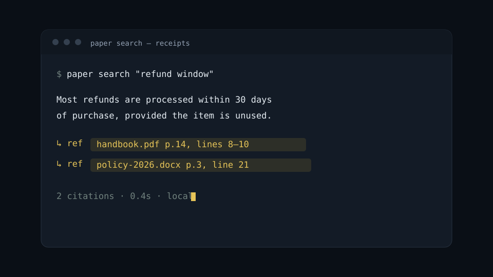

Ask your documents.
Get the exact receipt.
Paper is local-first AI document search that answers with exact citations: the file, the page, the line. One binary gives you a CLI and an MCP server. Nothing leaves your machine.
$ curl -fsSL https://kintsugi.tools/paper.sh | sh
One binary · first run sets up everything

An answer you can check.
A language model can sound right. Paper shows you where it got the answer, so you can verify it in seconds.
Exact citations
Every answer carries a reference to the file, the page, and the line it came from. Check the claim without re-reading the whole document.
One binary, two interfaces
The same executable is a CLI for your terminal and an MCP server for your AI tools, exposing eight purpose-built tools. No separate services to install.
Zero-touch first run
Point it at a folder. The first run installs its own background service, models, and index, then keeps them up to date as your documents change.
Reads the messy stuff
PDF, DOCX, and 15+ other formats. Scanned pages are handled with OCR across 100+ languages, so a pile of paper is still searchable.
Private by construction
No cloud, no API keys, no telemetry. Your documents and your questions stay on your machine, which also means Paper works with the network unplugged.
Index once. Ask forever.
Point it at a folder and let the single binary handle the rest, offline.
Point at a folder
Paper reads PDF, DOCX, and 15+ other formats, using OCR on scans across 100+ languages.
First run self-installs
Its background service, models, and index arrive automatically and stay current as files change.
Search with receipts
Use the CLI or the eight-tool MCP server. Every answer comes back with file, page, and line.
One binary. That's the whole install.
Run the installer, point Paper at a folder, and start asking questions. The first run handles the service, models, and index for you.
$ curl -fsSL https://kintsugi.tools/paper.sh | sh
Copied exactly · CLI + MCP server
or install from
$ npm i -g paperscope
$ brew install kintsugi-tools/tap/paper
$ cargo install paperscope
The URL /paperscope.html is kept for existing links, including crates.io.